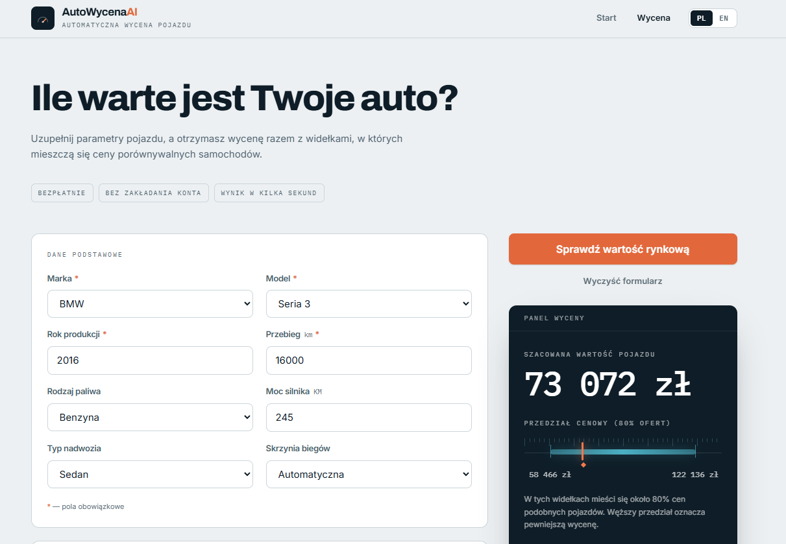

Wdrożony
Wycena samochodu używanego
Aplikacja webowa szacująca wartość rynkową używanego auta na podstawie parametrów takich jak marka, rocznik, przebieg i pojemność silnika. Sercem jest model gradient boosting (XGBoost) wytrenowany na danych ogłoszeń, udostępniony przez API FastAPI z prostym formularzem. Model ładowany jednorazowo przy starcie zwraca wycenę w milisekundach.